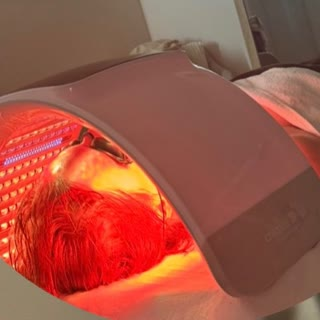

LED terapija
Nežna svetloba, vidni rezultati. Naravna in neboleča metoda za obnovo kože: z različnimi barvnimi valovnimi dolžinami deluje globinsko, pospeši regeneracijo, zmanjša vnetja in izboljša tonus kože.
Za akne, pigmentacije, rdečico, hitrejše celjenje in anti-age učinek. Vključena v negi Glow Up+ in Mesowave Deluxe.